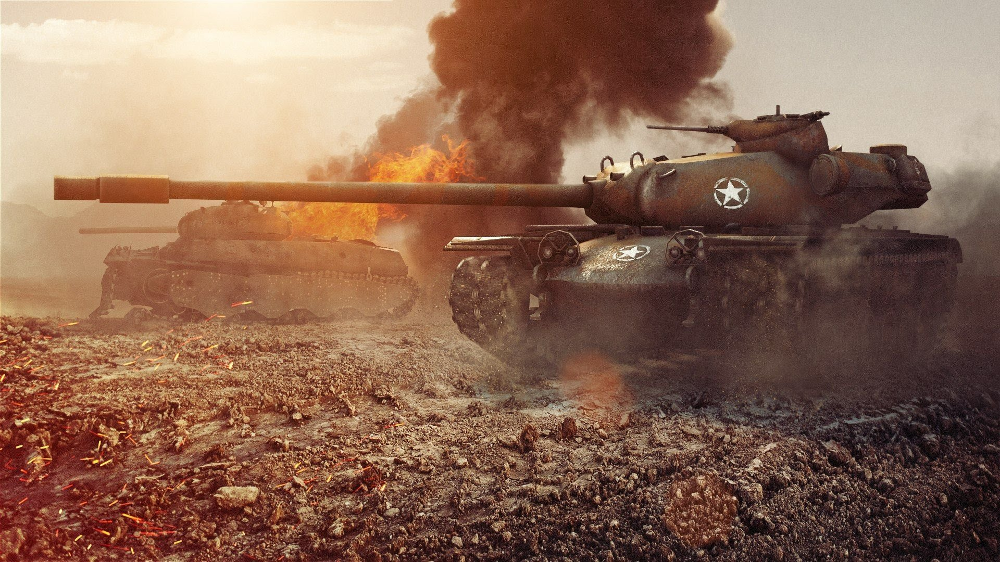
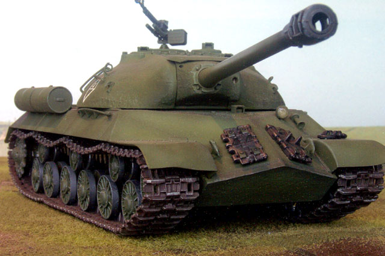

Heavy Tanks
(#Kranvagn) Kranvagn
.jpg)
The Kranvagn is a Swedish tier 10 heavy tank.
A project for a new vehicle for the Swedish army that started in 1949. For confidentiality purposes, the vehicle was given an unusual name, KRV, which stands for self-propelled crane (in Swedish). The project was based on the French AMX 50. A lightweight chassis was built and tested; in addition, a dummy with a turret was produced. A prototype was never built.
The Kranvagn marks the end of its Swedish heavy line.
(#T110E5) T110E5

The T110E5 is an American tier 10 heavy tank.
Developed from 1952 as a heavy tank with more powerful armament, compared to the T-43 (M103). Restrictions were placed on the vehicle sizing as the tank was supposed to pass through the narrow tunnels of the Bernese Alps. Several designs were considered, but the project was canceled. No vehicles were ever manufactured.
Simply called as "E5". It replaced the T30 as the tier 10 heavy tank in patch 0.7.2. This tank has high penetration and relatively quick reload in exchange for a lower alpha damage compared to many traditional heavy tanks. The T110E5 is a relatively quick heavy with good gun handling characteristics, and since patch 0.9.10 has had excellent armor values, allowing it to force other tanks to react its actions when driven well. The T110E5 is something of a blend of heavy and medium characteristics, allowing it to fill almost any role on the battlefield and perform well, but at the same time making it less specialized for specific roles compared to many other tier X tanks.
The T110E5 retains the 'eggshell' style of front hull armor layout from the M103 and has greater protection in the areas of high thickness both in the hull and the turret. However, there is little increase in effective protection in the previously thin areas such as the lower plate. The T110E5 also has a prominent commander's cupola that invites shells from opposing players. However, such an obvious target can be a boon as much as a liability in the hands of a player familiar with baiting and misdirecting cupola shots from opponents; the cupola is more heavily armored than most US cupolas and can surprise many an opponent looking for a quick shot. Only very high penetrating shells (250+) will be able to go through the cupola since the armor buff of patch 0.9.10.
Sadly, In 0.9.17.1 patch, The E5's cupola is nerfed, Makes it became new weakspot for E5.
The T110E5 marks the end of its American heavy line.
(#PzVI Tiger P) PzVI Tiger P

The Tiger (P) is a German tier 7 heavy tank.
On May 26, 1941, Adolf Hitler ordered Ferdinand Porsche and the Henschel company to develop prototypes of a new heavy tank. The prototypes were shown to the Führer on April 20, 1942. Manufacturing began, but the production run was cut short due to the complexity of the tank's drive and control systems, and a shortage of the required copper. Later, 90 produced hulls were converted into Ferdinand tank destroyers.
While in stock form, its 7.5 cm KwK 42 L/70 is insufficient for targets above its tier. Once its accurate and powerful 8.8 cm KwK 43 L/71 is mounted, the Tiger (P) becomes a real sniper, capable of destroying higher tier tanks. Its unusually thick hull armor and the 100mm thick mantlet covering the frontal 100mm plate of the upgraded turret makes it hard for many enemy tanks to penetrate frontally. It has a slightly different game style compared to its cousin, the Pz.Kpfw. VI Tiger; it has less engine power, the same weapons, a lower rate of fire, a lot more armor on the front, and lower top speed. Like the PzKpfw VI Tiger, the Tiger (P) excels as a sniper, though with its 200mm thick hull front, it is capable of leading the charge if required.
The Tiger (P) leads to the Tiger I, the VK 45.02 (P) Ausf. A, and the Ferdinand.
(#IS-3) IS-3
The IS-3 is a Soviet tier 8 heavy tank.
Mass production of the vehicle started in May 1945. On September 7,1945, IS-3 tanks took part in the Allied Victory Parade through Berlin. A total of 1170 vehicles were manufactured by the end of 1946, when production was canceled. From 1948 through the late 1950s, the tanks underwent a number of modernization refits.
The IS-3 has more agility and speed than the German Pz.Kpfw. Tiger II, and finds itself at home engaging in close-quarters combat. While the frontal hull armor is not as thick as its German counterpart, it more than makes up for as it is sloped and the tank is agile enough to use it effectively. The front of its upgraded turret is also very well armored and has small weak points, making it difficult to penetrate. However, it cannot use this to hull down in common locations because the tank has a low profile and lacks gun depression. Instead, use rises in the ground to engineer yourself extra gun depression, or hull down behind the wrecks of enemy tanks. Another technique the IS-3 excels at is reverse sidescraping; the act of showing its side armor at an extreme angle by parking its back up against hard cover; as the front-mounted turret limits exposure from doing so. However, due to the low profile of the tank, the turret roof or engine deck can often be penetrated in this position. In addition, the IS-3 cannot use classic sidescraping techniques due to its pike nose negating the sloping of the frontal armour and forward mounted turret; doing so only exposes the already thin frontal hull at a flatter angle. Despite this, the IS-3 is a devastating tank up front when it is equipped with its top gun, boasting solid alpha damage and high penetration.
The IS-3 leads to the T-10.